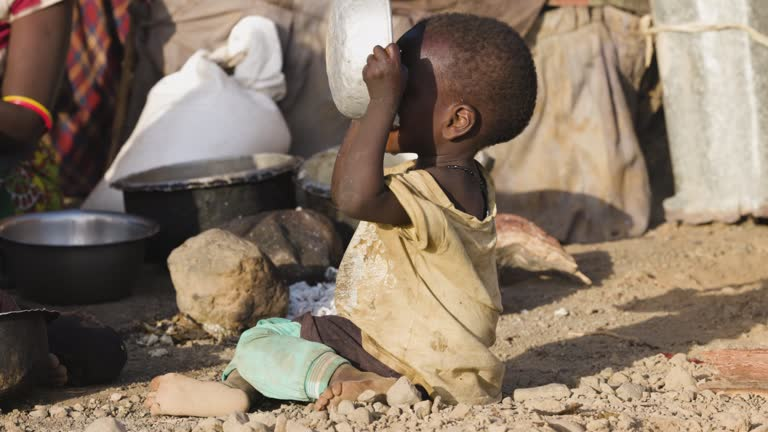

Understanding Global Hunger
The Causes and Effects

Introduction
Global hunger remains one of the most pressing challenges, affecting millions worldwide. It is driven by a combination of economic, environmental, and social factors, leading to severe consequences on health, education, and economic stability. Understanding the causes and effects of hunger is crucial to developing sustainable solutions.
Understanding the causes and effects of global hunger is essential in developing long-term solutions. Governments, humanitarian organizations, and individuals all have a role to play in addressing this crisis through sustainable agriculture, improved food distribution, and policy reforms. By examining the root causes and consequences of hunger, we can work toward a world where everyone has access to sufficient and nutritious food.
Causes of Global Hunger
Global hunger is driven by a complex set of factors, with poverty being one of the primary causes. Millions of people lack the financial resources to afford nutritious food, leading to widespread malnutrition. Climate change further worsens food insecurity by causing extreme weather events such as droughts, floods, and hurricanes that destroy crops and disrupt food production. Additionally, conflicts and wars displace communities, cut off food supplies, and make it difficult for humanitarian aid to reach those in need. Another significant issue is food waste and inefficient supply chains, where large amounts of food are lost due to poor storage, transportation, and distribution systems. Addressing these causes requires coordinated global efforts, including sustainable farming practices, economic support for vulnerable communities, and policies that improve food access and affordability.
Effects of global hunger
Global hunger has devastating consequences on individuals, communities, and economies. One of the most severe effects is malnutrition, which weakens immune systems, increases susceptibility to diseases, and stunts physical and cognitive development, especially in children. Hunger also negatively impacts education, as children from food-insecure families struggle with concentration, attendance, and academic performance, limiting their future opportunities.

Solutions for global hunger
Solving global hunger requires a combination of immediate aid and long-term sustainable solutions. Strengthening agricultural practices, such as climate-resilient farming and improved irrigation, can help increase food production and protect crops from environmental challenges. Governments and organizations must also policies that support food security, including fair food distribution, economic assistance for struggling communities, and social safety nets. Reducing food waste through better storage, transportation, and consumer awareness is another crucial step in ensuring food reaches those in need. Additionally, technology plays a vital role in combating hunger by optimizing food supply chains, improving market access for farmers, and innovating new food production methods. By combining these efforts, we can work toward a world where everyone has access to sufficient and nutritious food.
 Back to Top
Back to Top